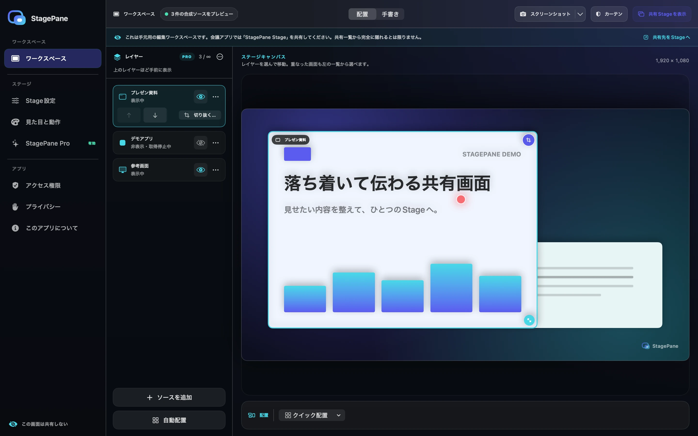
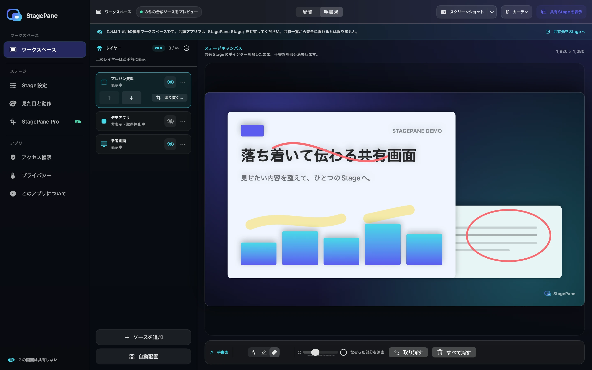
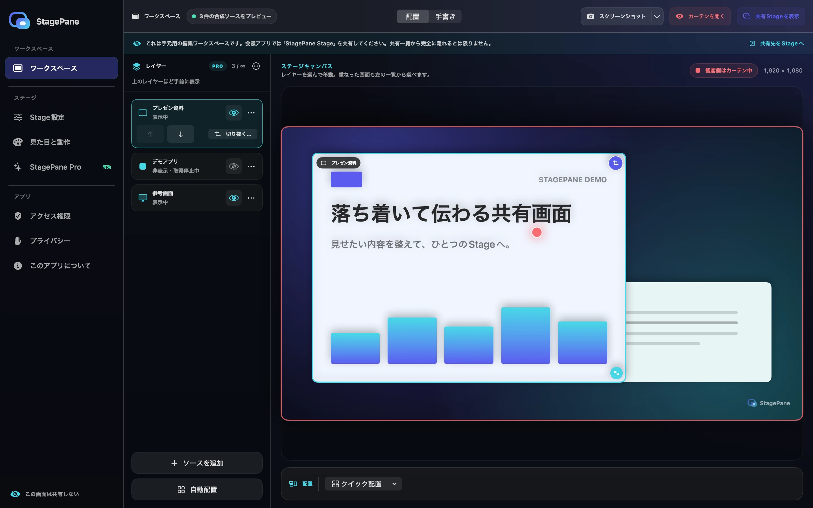
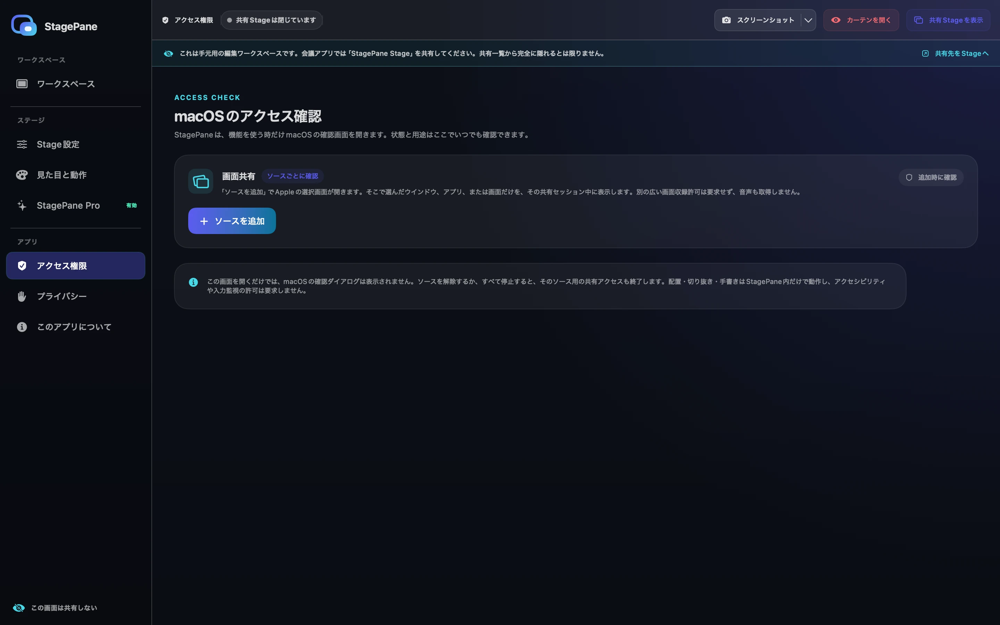
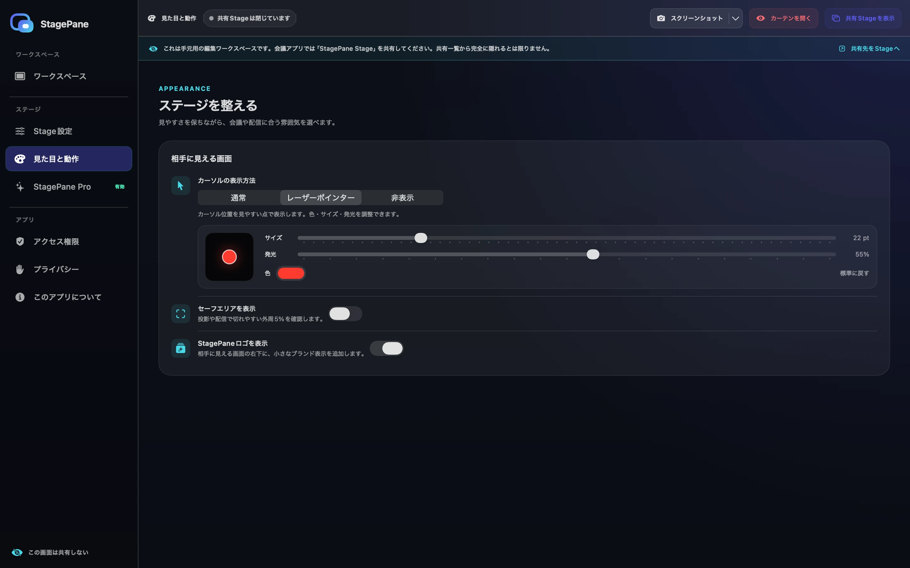

無料で利用 · Arrange
3つのソースを、ひとつの構図へ。
移動、自由なサイズ変更、重なり順、クイック配置をキャンバス上で確認。レーザーポインターは最前面のソースだけに表示します。

Mac App Storeで配信中
StagePaneは、画面共有で選べる専用ウインドウを作ります。
操作画面はあなたのMacに残し、相手には整えたStageだけを。
A clean stage for everything you share.
 Ready for your content
このウインドウを共有してください
Ready for your content
このウインドウを共有してください
相手に見せる、整えられた専用ウインドウ
大きなライブ編集画面と、ソース・設定をまとめたサイドバー
Live workspace
共有Stageには編集UIを載せず、合成結果だけを表示します。配置と手書きはライブ反映され、切り抜きは対象レイヤーのボタンから開いて手元で下書きし、「適用」したときだけ反映します。
無料で利用 · Arrange
移動、自由なサイズ変更、重なり順、クイック配置をキャンバス上で確認。レーザーポインターは最前面のソースだけに表示します。

無料で利用 · Draw
ペン、半透明の蛍光ペン、大きさを変えられる部分消去の消しゴムをひとつのDockに。消去も正確に取り消せ、手書き中は観客側のポインターを隠します。

Built for calm sharing
共有する内容と操作する場所を分け、プレゼン中の迷いや誤操作を少なくします。
共有Stageには相手に見せる内容を、Workspaceには編集UIを表示します。会議アプリでは「StagePane Stage」ウインドウを選んで共有してください。
⇧⌘H でStageを前面へ移動せずにすぐ覆えます。メッセージは80文字まで。カーテン自体では取得は止まらないため、完全に止めるときは「すべて停止」を使います。
Appleのピッカーでソースを選び、配置・サイズ・重なり順・切り抜き・手書きを整えます。無料版は同時に4ソースまで。買い切りのProはアプリ側の件数制限を解除します。利用できる件数はMacとOSの性能に依存します。
観客側Stageを16:9（1920×1080）、4:3（1440×1080）、9:16（1080×1920）、1:1（1080×1080）のPNGとして明示的にコピーまたは保存できます。現在の共有内容またはカーテン、手書き、ロゴ、有効な場合はセーフエリア、表示中の場合はポインターを含み、Workspaceの編集UIは含みません。
Aurora、Midnight、Paper、Studioのテーマに加え、通常・レーザーポインター・非表示を選べます。レーザーポインターは色・サイズ・発光を調整でき、最前面ソースだけに表示します。半透明のStagePaneロゴは待機画面、共有内容、カーテンの右下に表示され、買い切りのStagePane Proなら設定から非表示にできます。
必要な場面をPNGとしてコピーまたは保存できます。画面の扱いは下のポリシーをご確認ください。
プライバシーポリシーへ →Real interface
以下はStagePane自身が合成データだけで描画した画面です。Workspaceを手元に置き、会議アプリでは正確なStageウインドウだけを共有します。





How it works
仮想ディスプレイや別のデスクトップは作りません。会議アプリから普通のウインドウとして選びます。
StagePaneは、きれいな共有Stageと、キャンバス・ソース・設定をサイドバーにまとめた手元用Workspaceの2画面です。
「ソースを追加」でウインドウ・アプリ・画面から1件を、その取得セッション用に許可します。アプリを選ぶと、そのアプリが持つ複数のウインドウが含まれる場合があります。範囲を狭くする場合は1つのウインドウを選びます。無料版は同時に4件まで追加でき、買い切りのStagePane Proにはアプリ側の件数制限がありません。実際に利用できる件数はMacの性能とOSの制約に依存します。
手元のWorkspaceで移動・サイズ変更・手書きを行い、会議アプリでは正確な「StagePane Stage」ウインドウを選んでカーテンを開きます。
「すべて停止」で全ストリームを終了し、配置と切り抜きを保持している再接続待ちを含む、すべてのレイヤーを削除します。カーテンだけでは取得は止まりません。
プライバシーポリシー
選択した画面と手書きは、Mac上でStageを表示するために処理します。画面の配信は、利用者が選んだ会議アプリが行います。
設定はMacに保存します。画面と手書きは作業中のメモリで扱い、「すべて停止」または終了で破棄します。「画像をコピー」「PNGを保存」で作成した画像は、クリップボードまたは選択した場所に残ります。不要な画像は利用者が削除できます。
開発者はアプリ内の画面や個人データを収集しません。Proの購入・復元はAppleが処理します。このサイトはGitHub Pagesで配信され、接続情報は配信事業者に処理されます。
画面の選択はAppleの共有ピッカーで変更できます。切り抜きは表示範囲を変える機能で、選択したソース全体の取得範囲は変わりません。カーテンはStageの表示を覆い、取得を終了するには「すべて停止」を使います。
Apple Privacy · GitHub Privacy
問い合わせのメールアドレスと本文は対応のために必要な期間だけ保管し、削除依頼を受け付けます。
公式アプリはMac App Storeで配信しています。価格、追加購入の内容、対応環境はApp Storeとアプリ内の購入画面をご確認ください。購入・支払い・返金の手続きにはAppleの規定が適用されます。このサイトでは販売・決済を行いません。
Appleの購入サポートSupport
購入・請求・返金についてはAppleのサポートをご利用ください。アプリの使い方はこのページのガイドをご確認ください。解決しない製品のお問い合わせ: support@hinoshiba.com
Appleの購入サポートStage Workspaceまたは共有Stageはメニューバーから再表示できます。⇧⌘H はカーテン、⇧⌘P は「ソースを追加」です。
解除されたレイヤーの「選び直す」から同じ配置と切り抜きへ再接続できます。共有Stageを閉じてもレイヤーと取得はWorkspaceに残るため、完全に終了する場合は「すべて停止」を使ってください。
macOS・StagePaneのバージョン、合成データで再現する手順、期待した結果と実際の結果を共有してください。
実際の画面フレーム、私的なウインドウ名、会議URL、トークン、TCCデータベース、未編集の診断情報は投稿しないでください。
Build from source
macOS 14以降とXcode 16以降を用意し、リポジトリをcloneしてください。Apple SiliconとIntelの両方を対象にしています。
公式版はMac App Storeで配信中です。 ./build.sh の成果物はStore版と同じApp Sandboxと配置・切り抜き・手書き機能を使いますが、開発用のad-hoc署名・未公証ビルドであり、公式バイナリや配布用成果物ではありません。
$ git clone https://github.com/
hinoshiba/StagePane.git
$ cd StagePane
$ ./build.sh
$ open dist/StagePane.appライセンス: ソースコードとロゴ・アイコンの著作物はApache License 2.0です。StagePaneの名称やロゴを、公式性や提携を示す商標として使う権利は付与されません。